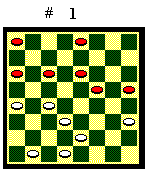

La partita
Nel gioco della dama, chi riesce ad ottenere un vantaggio materiale, anche di una sola pedina, normalmente vince. Esistono posizioni in cui il partito in svantaggio può ottenere una patta sotto pezzo, ma sono delle eccezioni. Ottenere un vantaggio materiale però, a meno che l'avversario non commetta una svista, non è facile. Il guadagno di un pezzo, di solito, è la concretizzazione di un vantaggio posizionale, ottenuto con manovre delicate e pazienti. Quindi non si deve cercare subito di guadagnare dei pezzi, magari approntando tranelli che, se evitati dall'avversario, ci lasciano in cattiva posizione. E' necessario invece porsi degli obiettivi intermedi, che variano con il procedere della partita, con la diminuzione dei pezzi in gioco, con la promozione a dama delle pedine.

A titolo di esempio, riporto una partita commentata.1.23-19 (la mossa iniziale più
forte: un passo verso il centro dalla parte del cantone) 11-14 (forma l'apertura
"Controdiagonale": inceppa il centro per una successiva semplificazione)
2.28-23 (se 21-18, 14x21 indebolisce il biscacco) 7-11 3.32-28 (mossa d'attesa:
sdama la 32 e non indebolisce il biscacco e la base. Giocabile anche 22-18,
11-15 ecc.) 11-15 (se 12-15 indebolisce il biscacco) 4.22-18 (semplifica.
Se 21-18 indebolisce il biscacco) 15x22 5.18x11 6x15 6.27x18 (se 26x19
toglie entrambe le pedine 26 e 27 che sono sostegni importanti per il centro.
Dopo questo doppio cambio possiamo ritenerci nel centro partita) 2-6 (se
15-19 avanza un pezzo poco difendibile) 7.26-22 (cerca il controllo del
centro) 12-16 8.23-19 6-11 9.19x12 8x15 10.28-23 10-14 11.21-17 14x21 12.25x18
5-10 13.23-19 4-8 14.19x12 8x15 15.31-27 (Diagramma 1) (il Nero
ha sguarnito il biscacco e il Bianco cerca di sfondare) 16-20! (se 10-14?,
27-23, X, 23-19 il Bianco, per l'attacco precipitoso del Nero, dama nel
biscacco) 16.27-23 (il Bianco può aprirsi la via per damare: siamo
in finale. Buona anche 18-13. Se 22-19?, X, 10-14 il Nero ferma 3 pedine
bianche e ottiene una dama in più) 20x27 17.30x23 10-14 18.29-25
14x21 19.25x18 1-5 20.23-19 5-10 21.19x12 10-14 22.12-8 14x21 23.22-19
3-7 24.8-4 7-12 25.24-20 (se 4-7, 11-15 pari) 12-16 26.19-15 ecc. Pari.
Anche se un colore ottiene la terza dama non vince, come da finale teorico
di tre dame contro due dame e una pedina.
Indice